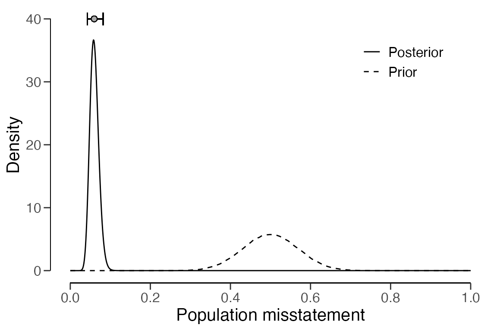
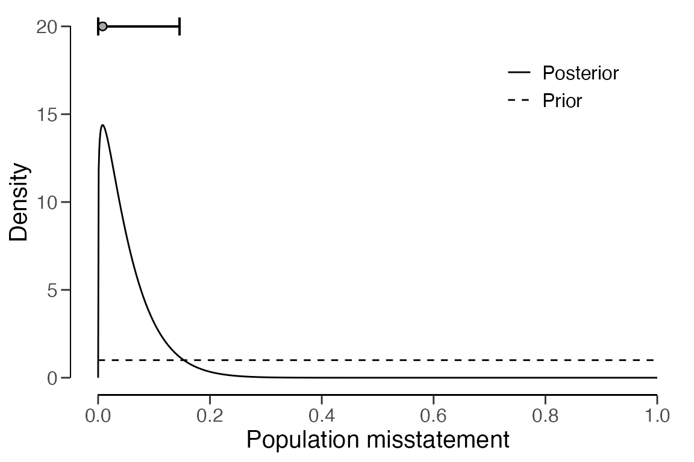
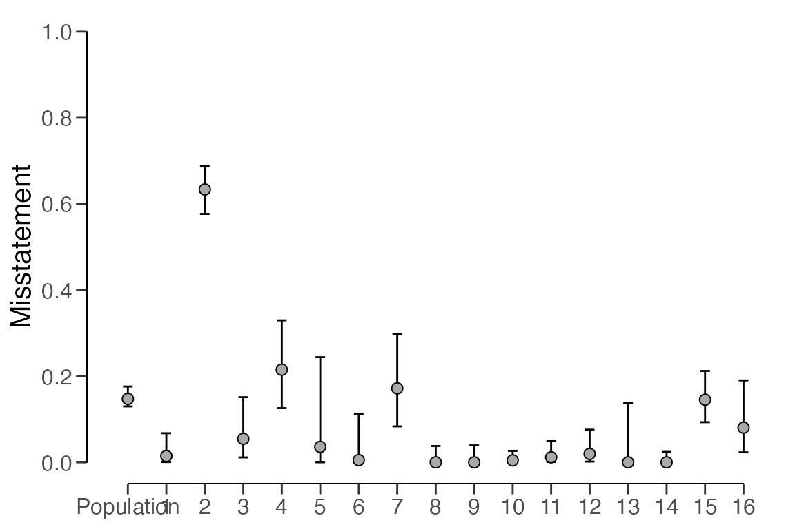

Evaluating statistical audit samples
Koen Derks
Source:vignettes/articles/sample-evaluation.Rmd
sample-evaluation.RmdIntroduction
Welcome to the ‘Evaluating statistical audit samples’ vignette of the
jfa package. This page demonstrates how to evaluate the
misstatement in an audit sample using the evaluation()
function in package.

In auditing, the objective of evaluation is typically 1) to estimate the misstatement in the population based on a sample or 2) to test the misstatement against a critical upper limit, known as performance materiality.
Required information
Firstly, to evaluate an audit sample using the
evaluation() function, the sample data must be available in
one of two formats:
-
Summary statistics: This includes (a vector of) the
number of items (
n), (a vector of) the sum of misstatements/taints (x) and optionally (a vector of) the number of units in the population (N.units). -
Data: A
data.framethat contains a numeric column with book values (values), a numeric column with audit (i.e., true) values (values.audit), and optionally a factor column indicating stratum membership (strata).
By default, evaluation() estimates the population
misstatement and returns a point estimate as well as a
confidence/credible interval around this estimate, expressed as a
percentage (conf.level
100). However, in audit sampling, the population is typically subject to
a certain maximum tolerable misstatement defined by the performance
materiality
.
You can provide the performance materiality to the
evaluation() function as a fraction using the
materiality argument. In addition to the default
estimation, specifying a value for materiality triggers the
comparison of two competing hypotheses. The hypotheses being compared
depend on the input for the alternative argument.
-
alternative = "less"(default): versus -
alternative = "greater": versus -
alternative = "two.sided": versus
Once the auditor has established the materiality (if applicable), they must make a decision on whether to stratify the population. Stratification is the process of dividing the population into smaller subgroups that contain similar items, referred to as strata, and selecting a sample from each stratum. In the following sections, we will demonstrate how to evaluate statistical audit samples, both stratified and non-stratified.
Evaluation using summary statistics
We first consider the scenario where the auditor does not have access to the sample data and wants to perform inference about the misstatement using summary statistics from the sample.
Non-stratified samples
In a non-stratified sampling approach, the auditor does not divide the population into different strata. This approach might be suitable when the auditor is auditing the general ledger of a small business and has substantiated that the population comprises homogeneous items, such as all items being employment contracts subject to a shared ensemble of control systems.
Classical approach
Classical hypothesis testing employs the p-value to determine whether to reject the null hypothesis of material misstatement . For instance, let’s assume an auditor aims to confirm if the population contains less than five percent misstatement. This suggests the hypotheses : 0.05 and : 0.05. The auditor selects a sample of = 100 items, with = 1 item containing a misstatement. They establish the significance level for the p-value (i.e., the sampling risk) at = 0.05, indicating that a p-value below 0.05 will suffice to reject the null hypothesis. The following command evaluates the sample using a classical non-stratified evaluation method (Stewart, 2012).
evaluation(materiality = 0.05, x = 1, n = 100)##
## Classical Audit Sample Evaluation
##
## data: 1 and 100
## number of errors = 1, number of samples = 100, taint = 1, p-value =
## 0.040428
## alternative hypothesis: true misstatement rate is less than 0.05
## 95 percent confidence interval:
## 0.00000000 0.04743865
## most likely estimate:
## 0.01
## results obtained via method 'poisson'The output indicates that the most likely misstatement in the population is estimated to be = = 0.01, or 1 percent, and the 95 percent (one-sided) confidence interval spans from 0 percent to 4.74 percent. It also reveals that the p-value is below 0.05, suggesting that the null hypothesis should be rejected. Consequently, the auditor can infer that the sample provides sufficient evidence to conclude with a reasonable degree of certainty that the population does not contain material misstatement.
Bayesian approach
Bayesian hypothesis testing employs the Bayes factor, either
or
,
to quantify the evidence that the sample provides in support of either
of the two hypotheses
or
(Derks et al., 2024). For instance, a
Bayes factor value of
= 10 (provided by the evaluation() function) can be
interpreted as the data being 10 times more likely under the hypothesis
of tolerable misstatement
than under the hypothesis of material misstatement
.
A value of
1 indicates evidence in favor of
and opposing
,
while a value of
1 indicates evidence supporting
and contradicting
.
The evaluation() function returns the value for
,
but
can be calculated as
.
Consider the earlier example where an auditor wishes to confirm if the population contains less than five percent misstatement, suggesting the hypotheses : 0.05 and : 0.05. They have selected a sample of = 100 items, with = 1 item found to contain a misstatement. The prior distribution is presumed to be a default beta(1,1) prior. The subsequent call evaluates the sample using a Bayesian non-stratified evaluation procedure (Derks et al., 2021; Stewart, 2013).
evaluation(materiality = 0.05, x = 1, n = 100, method = "binomial", prior = TRUE)##
## Bayesian Audit Sample Evaluation
##
## data: 1 and 100
## number of errors = 1, number of samples = 100, taint = 1, BF₁₀ = 515.86
## alternative hypothesis: true misstatement rate is less than 0.05
## 95 percent credible interval:
## 0.00000000 0.04610735
## most likely estimate:
## 0.01
## results obtained via method 'binomial' + 'prior'The output indicates that the most likely misstatement in the
population is estimated to be
=
= 0.01, or 1 percent, and the 95 percent (one-sided) credible interval
spans from 0 percent to 4.61 percent. The minor discrepancy between the
classical and default Bayesian results in the upper limit can be
attributed to the prior distribution, which needs to be proper for the
calculation of a Bayes factor. Classical results can be replicated by
formulating an improper prior distribution using
method = "strict" in the auditPrior()
function. The Bayes factor in this scenario is demonstrated to be
= 515, signifying that the sample data are approximately 515 times more
likely to occur under the hypothesis of tolerable misstatement than
under the hypothesis of material misstatement.
It is important to note that this is a considerably high Bayes factor
given the small amount of data observed. This can be explained by the
fact that the Bayes factor is influenced by the prior distribution for
.
The default prior distribution is not a good prior for
hypothesis testing. As a general guideline, when the prior distribution
is extremely conservative in relation to the hypothesis of tolerable
misstatement (as with method = 'default'), the Bayes factor
tends to overstate the evidence supporting this hypothesis. This
dependency can be alleviated by employing a prior distribution that is
impartial towards the hypotheses (Derks et al.,
2022a), which can be achieved using
method = "impartial" in the auditPrior()
function.
prior <- auditPrior(materiality = 0.05, method = "impartial", likelihood = "binomial")
evaluation(materiality = 0.05, x = 1, n = 100, prior = prior)##
## Bayesian Audit Sample Evaluation
##
## data: 1 and 100
## number of errors = 1, number of samples = 100, taint = 1, BF₁₀ = 47.435
## alternative hypothesis: true misstatement rate is less than 0.05
## 95 percent credible interval:
## 0.00000000 0.04110834
## most likely estimate:
## 0.0088878
## results obtained via method 'binomial' + 'prior'The output reveals that = 47, suggesting that under the presumption of impartiality, there is substantial evidence for , the hypothesis that the population contains misstatements less than five percent of the population (tolerable misstatement). Given that both prior distributions resulted in persuasive Bayes factors, the results can be deemed robust to the selection of prior distribution. Consequently, the auditor can deduce that the sample provides compelling evidence to conclude that the population does not contain material misstatement.
Stratified samples
In a stratified sampling method, the auditor extracts samples from various subgroups, or strata, within a population. This could be applicable in a group audit scenario where the audited organization comprises different components or branches. Stratification becomes pertinent for the group auditor when they need to form an opinion on the group as a whole, as they are required to consolidate the samples taken by the component auditors.
For instance, consider the retailer data set included in
the package. The organization in question has twenty branches spread
across the country. In each of the twenty strata, a component auditor
has conducted a statistical sample and reported the results to the group
auditor.
## stratum items samples errors
## 1 1 5000 300 21
## 2 2 5000 300 16
## 3 3 5000 300 15
## 4 4 5000 300 14
## 5 5 5000 300 16
## 6 6 5000 150 5
## 7 7 5000 150 4
## 8 8 5000 150 3
## 9 9 5000 150 4
## 10 10 5000 150 5
## 11 11 10000 50 2
## 12 12 10000 50 3
## 13 13 10000 50 2
## 14 14 10000 50 1
## 15 15 10000 50 0
## 16 16 10000 15 0
## 17 17 10000 15 0
## 18 18 10000 15 0
## 19 19 10000 15 1
## 20 20 4000 15 3Generally, there are two methodologies for evaluating a stratified
sample: no pooling and partial pooling (see Derks
et al., 2022b). When using the evaluation() function
in a stratified sampling context, you need to specify the type of
pooling to be used via its pooling argument. No pooling
presumes no similarities between strata, implying that all strata are
analyzed independently. Partial pooling presumes both differences and
similarities between strata, implying that information can be shared
between strata. This technique is also known as multilevel or
hierarchical modeling and can lead to more efficient population and
stratum estimates. However, it is currently only available in
jfa when conducting a Bayesian analysis. For this
reason, this vignette primarily describes the Bayesian approach to
evaluating stratified audit samples. However, transitioning from a
Bayesian approach to a classical approach only requires setting
prior = FALSE.
The number of units (this can be items or monetary units depending on
the audit objective) per stratum in the population can be supplied with
N.units to weigh the stratum estimates for determining the
population estimate. This process is known as poststratification. If
N.units is not specified, it is assumed that each stratum
is equally represented in the population.
Approach 1: No pooling
The no pooling approach (pooling = "none") is the
default option and assumes there are no similarities between strata.
This implies that the prior distribution, specified through
prior, is applied independently in each stratum. This
approach allows for independent estimates of the misstatement in each
stratum, but for this reason it also results in a relatively high
uncertainty in the population estimate. The following command evaluates
the sample using a Bayesian stratified evaluation procedure, where the
stratum estimates are poststratified to derive the population estimate.
Note that it is important to set the seed via set.seed()
because the posterior distribution is determined via sampling.
set.seed(1)
result_np <- evaluation(
materiality = 0.05, method = "binomial",
n = retailer[["samples"]], x = retailer[["errors"]],
N.units = retailer[["items"]], pooling = "none",
alternative = "two.sided", prior = TRUE
)
summary(result_np)##
## Bayesian Audit Sample Evaluation Summary
##
## Options:
## Confidence level: 0.95
## Population size: 144000
## Materiality: 0.05
## Hypotheses: H₀: Θ = 0.05 vs. H₁: Θ ≠ 0.05
## Method: binomial
## Prior distribution: Nonparametric
##
## Data:
## Sample size: 2575
## Number of errors: 115
## Sum of taints: 115
##
## Results:
## Posterior distribution: Nonparametric
## Most likely error: 0.0598
## 95 percent credible interval: [0.042763, 0.082201]
## Precision: 0.022401
## BF₁₀: 0
##
## Strata (20):
## N n x t mle lb ub precision
## 1 5000 300 21 21 0.07000 0.04637 0.10467 0.03467
## 2 5000 300 16 16 0.05333 0.03324 0.08489 0.03156
## 3 5000 300 15 15 0.05000 0.03069 0.08086 0.03086
## 4 5000 300 14 14 0.04667 0.02816 0.07681 0.03014
## 5 5000 300 16 16 0.05333 0.03324 0.08489 0.03156
## 6 5000 150 5 5 0.03333 0.01472 0.07558 0.04225
## 7 5000 150 4 4 0.02667 0.01084 0.06643 0.03977
## 8 5000 150 3 3 0.02000 0.00726 0.05696 0.03696
## 9 5000 150 4 4 0.02667 0.01084 0.06643 0.03977
## 10 5000 150 5 5 0.03333 0.01472 0.07558 0.04225
## 11 10000 50 2 2 0.04000 0.01230 0.13459 0.09459
## 12 10000 50 3 3 0.06000 0.02178 0.16242 0.10242
## 13 10000 50 2 2 0.04000 0.01230 0.13459 0.09459
## 14 10000 50 1 1 0.02000 0.00478 0.10447 0.08447
## 15 10000 50 0 0 0.00000 0.00050 0.06978 0.06978
## 16 10000 15 0 0 0.00000 0.00158 0.20591 0.20591
## 17 10000 15 0 0 0.00000 0.00158 0.20591 0.20591
## 18 10000 15 0 0 0.00000 0.00158 0.20591 0.20591
## 19 10000 15 1 1 0.06667 0.01551 0.30232 0.23565
## 20 4000 15 3 3 0.20000 0.07266 0.45646 0.25646In this scenario, the output of the summary() function
indicates that the estimated misstatement in the population is 5.98
percent, with the 95 percent (two-sided) credible interval extending
from 4.28 percent to 8.22 percent. The estimates for each stratum vary
significantly from one another but exhibit relative uncertainty. They
can be visualized via the call below to
plot(..., type = "estimates")
plot(result_np, type = "estimates")
The prior and posterior distribution for the population misstatement
can be obtained using the plot(..., type = "posterior")
function.
plot(result_np, type = "posterior")
Approach 2: Partial pooling
The partial pooling approach (pooling = "partial")
presumes both differences and similarities between strata. This enables
the auditor to share information among the strata to minimize
uncertainty in the population estimate. The following call evaluates the
sample using a Bayesian stratified evaluation procedure, where the
stratum estimates are poststratified to derive the population estimate.
Remember, it is important to set the seed via set.seed() to
make the results reproducible.
set.seed(1)
result_pp <- evaluation(
materiality = 0.05, method = "binomial",
n = retailer[["samples"]], x = retailer[["errors"]],
N.units = retailer[["items"]], pooling = "partial",
alternative = "two.sided", prior = TRUE
)
summary(result_pp)##
## Bayesian Audit Sample Evaluation Summary
##
## Options:
## Confidence level: 0.95
## Population size: 144000
## Materiality: 0.05
## Hypotheses: H₀: Θ = 0.05 vs. H₁: Θ ≠ 0.05
## Method: binomial
## Prior distribution: Nonparametric
##
## Data:
## Sample size: 2575
## Number of errors: 115
## Sum of taints: 115
##
## Results:
## Posterior distribution: Nonparametric
## Most likely error: 0.0423
## 95 percent credible interval: [0.032494, 0.053654]
## Precision: 0.011354
## BF₁₀: 0.030086
##
## Strata (20):
## N n x t mle lb ub precision
## 1 5000 300 21 21 0.0579 0.04003 0.08836 0.03046
## 2 5000 300 16 16 0.0503 0.03217 0.07359 0.02329
## 3 5000 300 15 15 0.0424 0.03042 0.07060 0.02820
## 4 5000 300 14 14 0.0425 0.02849 0.06764 0.02514
## 5 5000 300 16 16 0.0437 0.03195 0.07382 0.03012
## 6 5000 150 5 5 0.0378 0.01823 0.06365 0.02585
## 7 5000 150 4 4 0.0360 0.01511 0.05944 0.02344
## 8 5000 150 3 3 0.0341 0.01177 0.05539 0.02129
## 9 5000 150 4 4 0.0364 0.01474 0.05940 0.02300
## 10 5000 150 5 5 0.0357 0.01783 0.06357 0.02787
## 11 10000 50 2 2 0.0433 0.01658 0.08010 0.03680
## 12 10000 50 3 3 0.0431 0.02147 0.09121 0.04811
## 13 10000 50 2 2 0.0373 0.01676 0.07932 0.04202
## 14 10000 50 1 1 0.0356 0.01120 0.07089 0.03529
## 15 10000 50 0 0 0.0392 0.00548 0.06181 0.02261
## 16 10000 15 0 0 0.0364 0.00895 0.08006 0.04366
## 17 10000 15 0 0 0.0374 0.00861 0.07943 0.04203
## 18 10000 15 0 0 0.0387 0.00867 0.08028 0.04158
## 19 10000 15 1 1 0.0403 0.01598 0.09819 0.05789
## 20 4000 15 3 3 0.0472 0.02772 0.13675 0.08955In this scenario, the output indicates that the estimated
misstatement in the population is 4.23 percent, with the 95 percent
credible interval extending from 3.25 percent to 5.37 percent. Note that
this population estimate is considerably less uncertain compared to the
no pooling approach. Similarly to the no pooling approach, the stratum
estimates differ from each other but are closer together and exhibit
less uncertainty. This can be explained by the fact that the partial
pooling approach allows for information to be shared between strata. The
stratum estimates can be visualized via a call to
plot(..., type = "estimates").
plot(result_pp, type = "estimates")The prior and posterior distribution for the population misstatement
can be obtained using the plot(..., type = "posterior")
function.
plot(result_pp, type = "posterior")Evaluation using data
In this example, we will demonstrate how to evaluate a stratified
sample using a data set. We will use the allowances data
set that is included in the package. This data set comprises
= 3500 subsidy declarations from municipalities. Each line item has a
recorded value book value (column bookValue) and an audited
value (column auditValue), which is the true value for the
purpose of this illustration. The data set already identifies the items
that have been audited as part of the sample in the column
times. In this scenario, we will be performing estimation
and therefore do not specify the materiality argument in
the evaluation() function.
## item branch bookValue auditValue times
## 1 1 12 1600 1600 1
## 2 2 12 1625 NA 0
## 3 3 12 1775 NA 0
## 4 4 12 1250 1250 1
## 5 5 12 1400 NA 0
## 6 6 12 1190 NA 0Non-stratified samples
To evaluate a non-stratified sample using data, you need to specify
the data, values, and
values.audit arguments. The input for these arguments
should be the name of the corresponding column in the input for the
data argument.
Classical approach
The command below evaluates the allowances sample using
a classical non-stratified evaluation approach. Note that the sample is
automatically separated from the population because the
times value for items not in the sample is
0.
evaluation(
data = allowances, times = "times", method = "binomial",
values = "bookValue", values.audit = "auditValue"
)##
## Classical Audit Sample Evaluation
##
## data: allowances
## number of errors = 401, number of samples = 1604, taint = 252.93
## 95 percent confidence interval:
## 0.0000000 0.1734283
## most likely estimate:
## 0.15769
## results obtained via method 'binomial'In this instance, the output indicates that the estimated
misstatement in the population is 15.77 percent. The 95 percent
(one-sided) confidence interval extends from 0 percent to 17.34 percent.
More detailed information can be obtained via the summary()
function.
Bayesian approach
The call below evaluates the allowances sample using a
Bayesian non-stratified evaluation procedure. The performance
materiality for this example is set to twenty percen of the population
value.
result <- evaluation(
materiality = 0.2, data = allowances, times = "times", method = "binomial",
values = "bookValue", values.audit = "auditValue", prior = TRUE
)
print(result)##
## Bayesian Audit Sample Evaluation
##
## data: allowances
## number of errors = 401, number of samples = 1604, taint = 252.93, BF₁₀
## = 545408
## alternative hypothesis: true misstatement rate is less than 0.2
## 95 percent credible interval:
## 0.0000000 0.1733213
## most likely estimate:
## 0.15769
## results obtained via method 'binomial' + 'prior'The output shows that the estimate of the misstatement in the
population is 15.77 percent, with the 95 percent (one-sided) credible
interval ranging from 0 percent to 17.33 percent. More detailed
information can be obtained via summary() and the prior and
posterior distribution can be obtained by a call to
plot(..., type = "posterior").
plot(result, type = "posterior")
It is also possible to see how the Bayes factor evolves as a function
of the sample size. This can be done using
plot(..., type = "sequential"). In this case, the Bayes
factor is very large due to the large sample.
plot(result, type = "sequential")
Stratified samples
To evaluate a stratified sample using a data set, you need to specify
the data, values, values.audit,
and strata arguments in the evaluation()
function. The input for N.units is once again optional. In
this example, the units are monetary, determined by summing up the book
values of the items within each stratum. For instance, we can see that
stratum two is the largest, with a total value of $2,792,814.33 and
stratum five is the smallest, with a total value of $96,660.53.
N.units <- aggregate(allowances$bookValue, list(allowances$branch), sum)$x
print(data.frame(N.units))## N.units
## 1 317200.09
## 2 2792814.33
## 3 1144231.69
## 4 414202.89
## 5 96660.53
## 6 348006.13
## 7 2384079.33
## 8 1840399.33
## 9 563957.70
## 10 3198877.73
## 11 1983299.06
## 12 319144.13
## 13 148905.79
## 14 513058.76
## 15 432007.61
## 16 275403.70Classical approach
The following command evaluates the allowances sample
using a classical stratified evaluation method. In this process, the
estimates from each stratum are poststratified to derive the estimate
for the entire population. Note that for computational reasons it is
important to set a seed here via set.seed().
set.seed(1)
result <- evaluation(
data = allowances, times = "times", method = "binomial",
values = "bookValue", values.audit = "auditValue",
N.units = N.units, strata = "branch",
alternative = "two.sided"
)
print(result)##
## Classical Audit Sample Evaluation
##
## data: allowances
## number of errors = 401, number of samples = 1604, taint = 252.93
## 95 percent confidence interval:
## 0.1298437 0.1759994
## most likely estimate:
## 0.14723
## results obtained via method 'binomial' + 'no-pooling'In this instance, the output reveals that the estimated misstatement
in the population is 14.72 percent. The 95 percent confidence interval
spans from 12.98 percent to 17.6 percent. The precision of the
population estimate is therefore 4.26 percent. The estimates for each
stratum are visualized below. For more detailed information, including
the actual stratum estimates, you can use the summary()
function.
plot(result, type = "estimates")
Bayesian approach
Bayesian inference can enhance the estimates obtained from the
classical approach by pooling information across strata where feasible.
The following command evaluates the allowances sample using
a Bayesian stratified evaluation method. In this process, the estimates
from each stratum are pooled and poststratified to derive the estimate
for the entire population.
set.seed(1)
result <- evaluation(
data = allowances, times = "times", method = "binomial",
values = "bookValue", values.audit = "auditValue",
N.units = N.units, strata = "branch", pooling = "partial",
alternative = "two.sided",
prior = TRUE
)
print(result)##
## Bayesian Audit Sample Evaluation
##
## data: allowances
## number of errors = 401, number of samples = 1350, taint = 224.66
## 95 percent credible interval:
## 0.1571337 0.1757009
## most likely estimate:
## 0.1659
## results obtained via method 'binomial' + 'partial-pooling' + 'prior'The output indicates that the estimated misstatement in the
population is 16.59 percent. The 95 percent credible interval spans from
15.71 percent to 17.57 percent. The precision of the population estimate
is therefore 1.86 percent, which is lower than that of the classical
approach. The estimates for each stratum are visualized below using the
plot(..., type = "estimates) command but their actual
values can be once again be obtained using the summary()
function.
plot(result, type = "estimates")
The prior and posterior distribution for the population misstatement
can be obtained via the plot(..., type = "posterior")
function.
plot(result, type = "posterior")